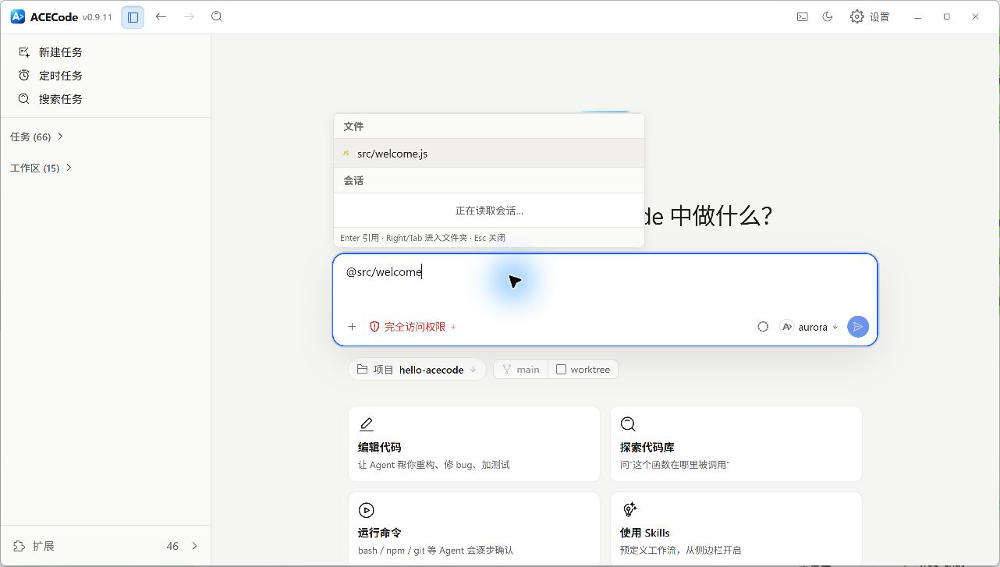
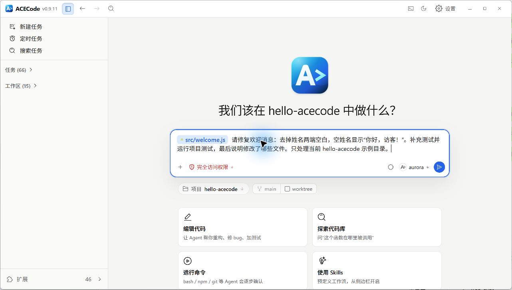
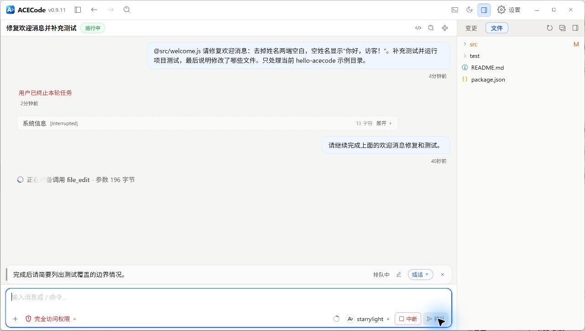
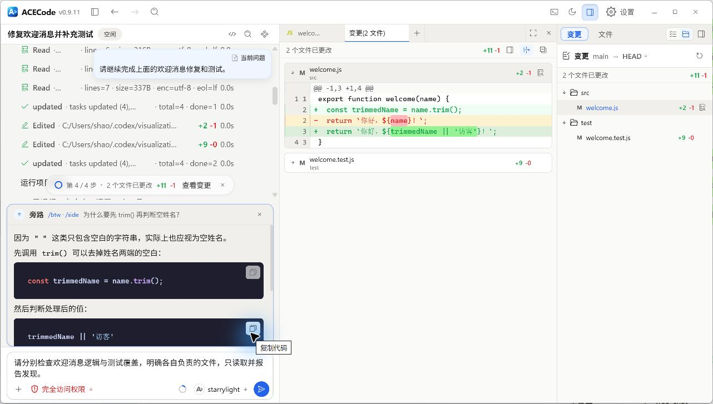

对话与上下文
给出目标和必要上下文，在同一个任务里补充要求；需要旁支问答时使用独立的侧边聊天。
发送消息与引用文件
在输入框写明目标、相关范围和验证方式，Enter 发送，Shift+Enter 换行。输入 @ 会列出当前目录的直接子项；继续输入路径可以进入目录并过滤候选。
用方向键选择后，Enter 引用文件或文件夹，Tab 或右方向键进入文件夹。目录引用保留末尾的 /，含空格的路径会加引号。选择目录不会递归附上所有文件。
检查 @src/ 和 @tests/ 中与登录相关的实现。
修复空密码仍能提交的问题，保留现有样式，并运行相关测试。桌面端可在文件树中右键选择添加到会话，或把预览中选中的文本引用到聊天。路径引用让智能体按需读取文件，发送前可直接编辑或删除输入中的引用。
添加图片与附件
| 添加方式 | 实际交给任务的内容 |
|---|---|
| 桌面端：添加上下文 > 文件或文件夹 | 本地路径引用，包括图片、PDF、归档和大文件；选择时不预读整个文件。 |
| 桌面端：选择当前文件夹 | 当前目录的相对或绝对路径引用。 |
| 粘贴没有本地路径的剪贴板图片 | 图片附件快照。 |
| 浏览器直接上传文件 | 上传到服务端任务中的附件快照，受格式和大小校验约束。 |
添加后检查输入框中的路径或附件卡片，再发送要求。例如说明截图中的错误位置，或指定 PDF 的页码。视觉能力取决于所选模型和可用工具；仅添加一张图片不代表文本模型能直接看懂它。上传被拒时查看提示，按需减小文件、拆分内容或改用桌面路径引用。
{kind=link}

{kind=link}

排队、补充指令与中断
任务运行时，发送按钮显示排队。按 Enter 后，消息进入输入框上方的排队卡片，等当前回合结束再发送。卡片提供编辑、取消和失败后的重试操作。
想让补充信息影响当前回合时，点击排队卡片上的插话。它会在当前回合下一次模型调用前加入消息，不会瞬间撤销已经执行的工具。需要立即结束当前工作时，使用中断或停止控件，等状态结束后再发送新的任务要求。
{kind=link}

侧边栏对话
界面中的入口名是侧边聊天，位于详情栏的打开工具菜单。它有独立输入草稿，适合询问当前实现的理由、解释报错或补充知识，不会改写主输入草稿。
/side 刚才为什么选择这个实现？
/btw 这个报错中的术语是什么意思？/side 与 /btw 是同类旁支问答入口。回答基于当前任务的上下文快照，独立执行一轮，不调用工具，不把这条问题当作主任务的后续修改指令。需要实际读取新文件或执行修改时，把要求发到主对话。
主任务继续工作后，侧边回答仍对应提问时的上下文；需要最新进展时重新询问。每次问题都应包含清楚的指代，避免只写“它”或“这个”。
{kind=link}
